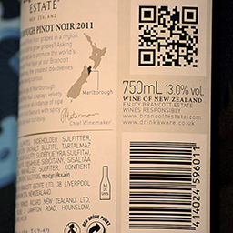
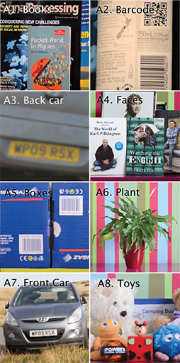

Mitigating atmospheric distortion
Various types of atmospheric distortion can influence the visual quality of video signals during acquisition. Typical distortions include fog or haze which reduce contrast, and atmospheric turbulence due to temperature variations or aerosols. An effect of temperature variation is observed as a change in the interference pattern of the light refraction, causing unclear, unsharp, waving images of the objects. This obviously makes the acquired imagery difficult to interpret.
This project introduced a novel method for mitigating the effects of atmospheric distortion on observed images, particularly airborne turbulence which can severely degrade a region of interest (ROI). In order to provide accurate detail from objects behind the distorting layer, a simple and efficient frame selection method is proposed to pick informative ROIs from only good-quality frames. We solve the space-variant distortion problem using region-based fusion based on the Dual Tree Complex Wavelet Transform (DT-CWT). We also propose an object alignment method for pre-processing the ROI since this can exhibit significant offsets and distortions between frames. Simple haze removal is used as the final step. We refer to this algorithm as CLEAR (for code please contact me) (Complex waveLEt fusion for Atmospheric tuRbulence).
Atmospheric distorted videos of static scene
Mirage (256x256 pixels, 50 frames). Left: distorted sequence. Right: restored image. Download PNG

Monument (512x512 pixels, 100 frames). Left: distorted sequence. Right: restored image. Download PNG

Simulated datasets, generated with gas burner turbulence, with three different amounts of distortions. Download PNG
 Atmospheric distorted videos of moving object
Left: Distorted video. Right: Restored video. Download PNG
References
- Atmospheric turbulence mitigation using complex wavelet-based fusion. N. Anantrasirichai, Alin Achim, Nick Kingsbury, and David Bull. IEEE Transactions on Image Processing.
[ PDF] [ BibTeX] [ Sequences] [ Code: please contact me] - Mitigating the effects of atmospheric distortion using DT-CWT fusion. N. Anantrasirichai, Alin Achim, David Bull, and Nick Kingsbury. In Proceedings of the IEEE International Conference on Image Processing (ICIP 2012).
[ PDF] [ BibTeX] - Mitigating the effects of atmospheric distortion on video imagery : A review. University of Bristol, 2011.
[ PDF] - Mitigating the effects of atmospheric distortion. University of Bristol, 2012.
[ PDF]